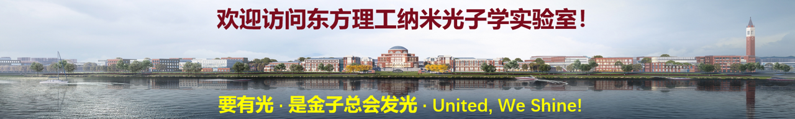

等离子增强纳米复合材料
探索纳米复合材料的光学性质、增强机制及其检测与成像应用。

我们是一个多学科交叉课题组，研究涵盖化学、物理、材料、生物医学、光学工程与精密仪器。
课题组围绕纳米光子学开展前沿研究，推动基础研究、方法创新与实际应用相结合。我们主要从事纳米复合材料(尤其是金基纳米材料)的光电性质、界面动力学及相关机理研究，以及它们在能源、环境与生物医用等领域的应用。研究体系包括基于金属/半导体的纳米复合材料、生物医用材料与非线性光学材料，研究主题涵盖时间分辨与非线性光谱学、光诱导物理与化学过程、光催化，以及光介导的生物传感、分子成像与精准治疗。欢迎有好奇心、行动力和合作精神的同学与同行交流或加入我们。
探索纳米复合材料的光学性质、增强机制及其检测与成像应用。
发展面向生命健康相关应用(环境和生物医用)的光催化材料与方法。
研究生物检测、成像和治疗相结合的材料与光学技术。
利用超快光谱和成像技术研究材料中的动态过程。
S. Tian, X. F. He, X. Wu, D. Hu, Q.-H. Xu*, “pH-Responsive Metal Nanoparticles as High Contrast Theranostic Agents for Selective Imaging and Synergistic Cancer Therapy,” Sci. China Chem. 2024, 67(9), 3063–3070.
J. Shi, Z. Lin, Z. Zhu, J. Zhou, G. Q. Xu, and Q.-H. Xu*, “Probing Excitonic Rydberg States by Plasmon Enhanced Nonlinear Optical Spectroscopy in Monolayer WS2 at Room Temperature,” ACS Nano 2022, 16(10), 15862–15872.
S. Tian, J. He, D. Lyu, S. Li, Q.-H. Xu*, “Aggregation enhanced photoactivity of photosensitizer conjugated metal nanoparticles for multimodal imaging and synergistic phototherapy below skin tolerance threshold,” Nano Today 2022, 10, 101354.
K. Li et al., “Photocatalytic Hydrogen Evolution under Ambient Conditions on Polymeric Carbon Nitride/Donor-π-Acceptor Organic Molecule Heterostructures,” Adv. Funct. Mater. 2020, 30(43), 2005106.
J. He, S. Li, D. Lyu, D. F. Zhang, X. Wu, Q.-H. Xu*, “Aggregation Induced Emission Enhancement by Plasmon Coupling of Noble Metal Nanoparticles,” Mater. Chem. Front. 2019, 3, 2421–2427.